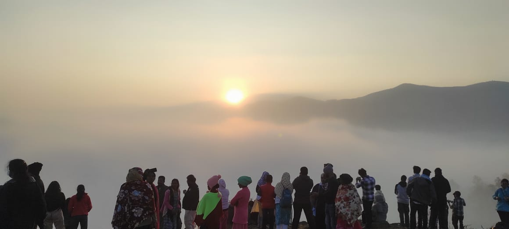
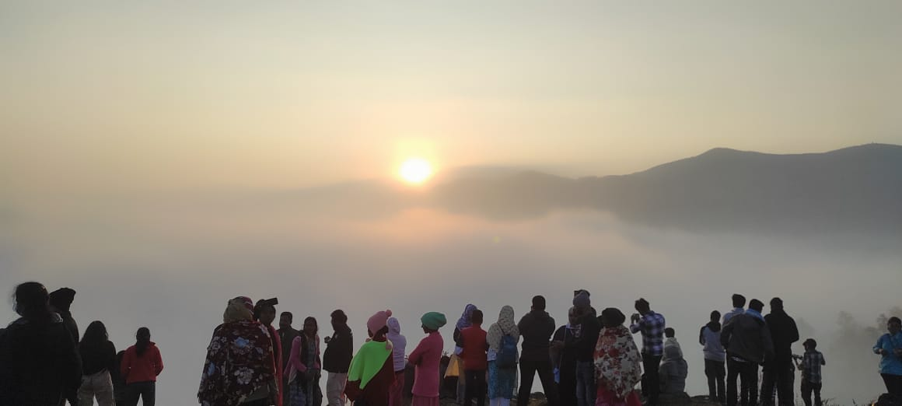
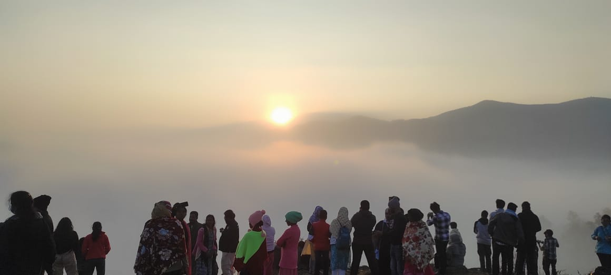
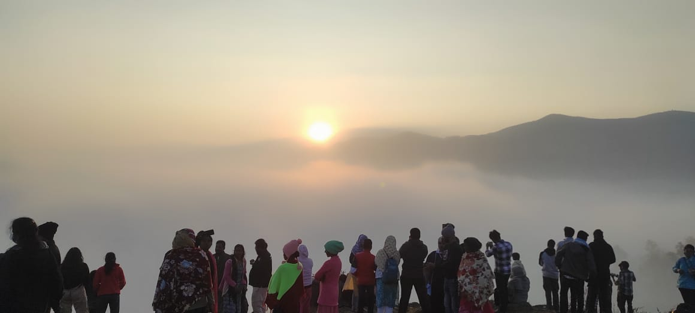

Nestled in the Eastern Ghats, Araku Valley is a breathtaking destination known for its lush landscapes, rich tribal culture, and stunning natural beauty. This tropical paradise offers a perfect blend of scenic views, cultural experiences, and natural wonders.
The Madagada Viewpoint is a crown jewel of Araku Valley. Perched at a high elevation, this viewpoint offers panoramic vistas of the surrounding mountains, deep valleys, and dense forests. Visitors can witness the mesmerizing landscape that stretches out before them, with rolling hills and misty mountains creating a picture-perfect scene.
Araku is home to several tribal communities. Visitors can experience their unique way of life, traditional crafts, and vibrant festivals. The tribal museum in the valley provides insights into the rich cultural heritage of the region.
The ideal time to visit Araku Valley is between October and March when the weather is cool and pleasant. During these months, the landscapes are lush green, and the temperature is perfect for exploring the outdoors.